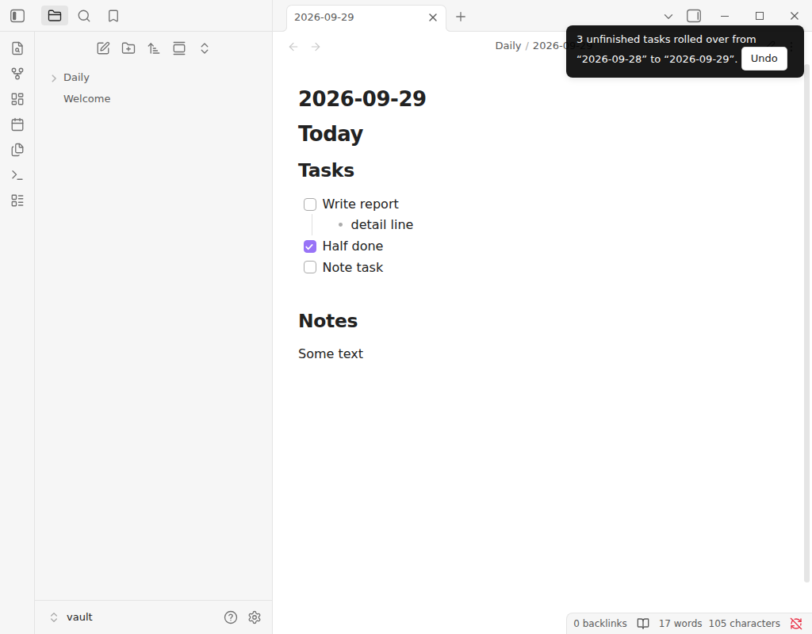

Free Obsidian plugin
Task Rollover
Move the unfinished tasks of your last daily note into today's note when it is created, under a heading you choose, with undo, nested items and no duplicates.
Install from the Obsidian directory Open in Obsidian Source code and issues

What it does
Unfinished tasks from yesterday's daily note show up in today's, by themselves, the moment today's note is created.
Yesterday's note:
Today's note, when you open it:
Highlights
- Waits for your template. If another plugin such as Templater fills the new note a moment after it is created, the tasks are added once the note has stopped changing, not on top of a half-written template.
- No duplicates. A task whose text is already a checkbox in today's note is not added again, so running the command twice is harmless.
- Puts tasks where you want them. Give a heading and they go at the end of that section (made if it is missing). Optionally only take tasks from under certain headings of the earlier note.
- Keeps nested lines with their task, and moves a nested task to the top level when it rolls alone.
- Leaves code alone. Checkboxes inside fenced code blocks are ignored.
- Cannot delete the wrong line. When the earlier note is changed after a rollover, each moved task is found again and checked before it is touched, so a line you edited in the meantime is left as it is, and removing one task never removes another line that happens to read the same.
- Catches up after a long break. "Gather unfinished tasks from past daily notes" looks back 7, 30 or 90 days, or all the way, and lists every unfinished task grouped by the note it sits in, newest note first. All are ticked; untick what you do not want, and press the button to move the rest into today's note (created if it does not exist yet). The same rules as a normal rollover apply: finished markers, source headings, empty tasks, tasks already in today's note and your choice for the earlier notes. A task that appears in several notes is listed once, from the newest.
Details
- Version
- 0.2.1
- Needs Obsidian
- 1.8.7 or newer
- Platforms
- Desktop and mobile
- Author
- Siulved54
- Price
- Free and open source